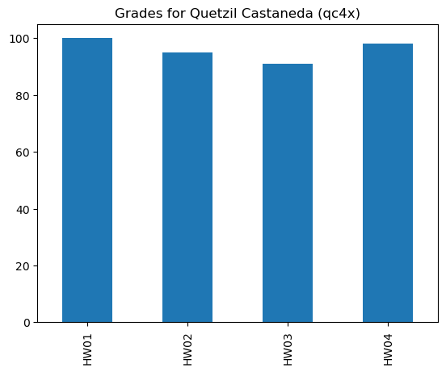

class MyClass():
"""Example class for Exercise 7.1"""
att1 = "foo"
def __init__(self, att2):
self.att2 = att2
def add(self):
self.msg = self.att1 + ' ' + self.att2
print(self.msg)M07 Exercises
DS 5100 | Summer 2024 | Residential
Exercise 7.1
Define a class called MyClass with the following features: - a docstring that says “Example class for Exercise 7.1” - a class attribute att1 with the default value "foo" - an __init__() function that takes one required string argument att2 and sets an instance attribute of att2 to that value - a method .add() that concatenates att1 and att2 and prints the result
Exercise 7.2
Create an object instance of the previous class by passing the argument required by the initializing method.
Pass a short sentence for the string.
Use the pattern object.attribute to show the two attributes.
Then call the add() method.
obj_1 = MyClass("This is not a pipe")obj_1.att1, obj_1.att2('foo', 'This is not a pipe')obj_1.add()foo This is not a pipeExercise 7.3
Create a class called Student that contains a student’s grades for a given class. * It should store the grades as a Pandas Series of type float. * It should have an initialization method that takes the student’s full name and user ID. * It should have a method to add an assignment with its grade to the Series object. * Hint: to add a new observation (row) to a Series, you can do this: foo.loc['new_key'] = new_value * It should also have a method to plot the student’s grades as a bar chart. * The plot should have a title stating the student’s name, and ID in parentheses.
import pandas as pd
class Student:
def __init__(self, student_name, student_id):
self.name = student_name
self.id = student_id
self.grades = pd.Series(dtype=float)
def add_grade(self, assignment, grade):
self.grades.loc[assignment] = grade
def show_grades(self):
self.grades.plot.bar(title=f"Grades for {self.name} ({self.id})")
Exercise 7.3a
Create an instance of a student with four grades. * Make up a name and an id. * Use HW01, HW02, HW03, and HW04 as assignment names. * Use the show_grades() to plot the grades.
student1 = Student("Quetzil Castaneda", 'qc4x')student1.add_grade("HW01", 100)
student1.add_grade("HW02", 95)
student1.add_grade("HW03", 91)
student1.add_grade("HW04", 98)student1.show_grades()
Exercise 7.4
The fictitious company UVAWS offers cloud computing as a service with a range of server options. Define and use with a class that instantiates a cloud server. Define a class with these requirements:
- Name:
V3 - Instance Attributes:
instance_sizea string, which expects one ofsmall,medium, andlargenum_vcpusan integer for the number of virtual CPUs.memoryan integer for the number of GBs.disk_spacea float for the number of TBs.
- Methods (with parameters):
__init__()That sets all of the attributes above.add_disk_space(amt_to_add). This adds disk space to the current disk space.amt_to_addexpects a float.
has_enough_disk_space(amt_required)this checks if the amount required is available.amt_requiredexpects a float.- Use natural language to print an appropriate response while also returning a boolean value.
- Return
Trueif enough space,Falseif not.
class V3():
def __init__(self, instance_size, num_vcpus, memory, disk_space):
self.instance_size = instance_size
self.num_vcpus = num_vcpus
self.memory = memory
self.disk_space = disk_space
def add_disk_space(self, amt_to_add):
self.disk_space += amt_to_add
def has_enough_disk_space(self, amt_required):
if self.disk_space >= amt_required:
print("You have enough disk space!")
return True
else:
print("You don't have enough disk space!")
return FalseExercise 7.5
Instantiate a V3 object with these attribute values:
instance_size: 'large'
num_vcpus: 32
memory: 256
disk_space: 1.Then: 1. Add \(2.0\) TB disk space to the instance. 2. Display the updated disk space using dot operator to display the attribute. 3. See if the instance has enough disk space, using a request of \(10.0\) TB.
my_v3 = V3('large', 32, 256, 1.)
my_v3.add_disk_space(2.)my_v3.disk_space3.0my_v3.has_enough_disk_space(10.)You don't have enough disk space!FalseExercise 7.6
Write a Python class named Circle constructed by a radius.
Include two methods: one to compute the area, the other the circumference of the circle.
Store both values as attributes rounded to the second decimal place.
Show the values by printing the attributes.
Hint: For the value of \(\pi\) use this line:
from math import pi
from math import pi
class Circle():
def __init__(self, radius):
self.radius = radius
def get_area(self):
self.area = round(self.radius**2 * pi, 2)
def get_circumference(self):
self.circumference = round(2 * self.radius * pi, 2)my_circle = Circle(8)
my_circle.get_area()
my_circle.get_circumference()print('A:', my_circle.area)
print('C:', my_circle.circumference)A: 201.06
C: 50.27Exercise 7.7
Write a Python class named Rectangle constructed by a length and width.
Include a method that will compute the area of the rectangle.
Save the area as a private attribute, but include another method to return this value.
Create an instance of the class with two integers of your choice and show the area.
class Rectangle():
def __init__(self, length, width):
self.length = length
self.width = width
def compute_area(self):
self._area = self.length * self.width
def get_area(self):
return self._areanewRectangle = Rectangle(12, 10)newRectangle.compute_area()newRectangle.get_area()120Exercise 7.8
Write a class Geometry with a single static method to compute the area of a rectangle.
Call the method with length as \(10\) and width as \(15\).
class Geometry():
def get_rectangle_area(l, w):
return l * wGeometry.get_rectangle_area(10, 15)150Exercise 7.9
Create a static class T2T that converts degrees between Celsius to Fahrenhein.
Create two methods c2f and f2c using lambda functions.
Use these formulas: \(F = 1.8C + 32\) and \(C = (F − 32) / 1.8\)
The class should work like this: Calling T2T.c2f(45) should print the answer 113.0.
class T2T:
c2f = lambda c: round(1.8 * c + 32, 2)
f2c = lambda f: round((f - 32) / 1.8, 2) T2T.c2f(45)113.0T2T.f2c(32)0.0